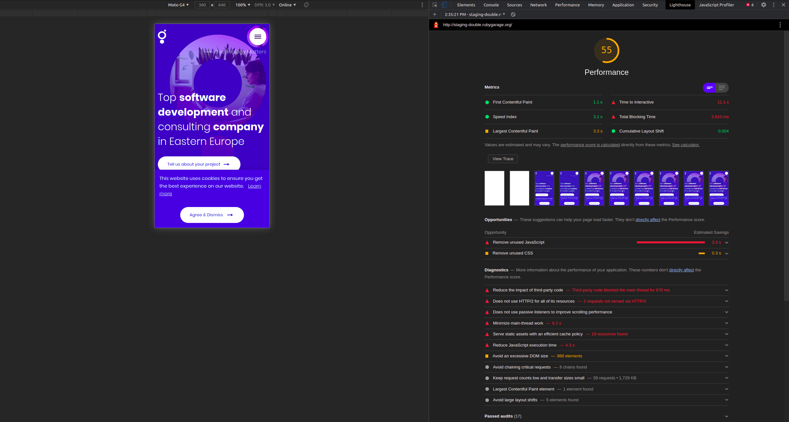

Network before critical css
Network after critical css
Perfomance before critical css
Perfomance after critical css

| Perfomance |
First Cont Paint |
Total Blocking Time |
Time to interactive |
Load |
Load DOM |
| Before |
After |
Before |
After |
Before |
After |
Before |
After |
Before |
After |
Before |
After |
| 41 |
55 |
2.7s |
1.1s |
2.4s |
2.9s |
11.8s |
11.1s |
2.68s |
4.83s |
745ms |
2.02s |
| 57 |
59 |
2.0s |
1.0s |
2.4s |
3.2s |
11.3s |
12.0s |
3.20s |
3.32s |
768ms |
1.32s |
| 58 |
50 |
2.0s |
1.0s |
2.1s |
3.0s |
11.7s |
11.1s |
2.46s |
2.88s |
762ms |
1.23s |
| 51 |
54 |
2.1s |
1.0s |
2.3s |
2.9s |
12.4s |
11.8s |
2.37s |
3.24s |
634ms |
950ms |
| 52 |
58 |
2.5s |
1.0s |
730ms |
3.3s |
11.3s |
11.5s |
2.41s |
2.31s |
716ms |
1.17s |
| 51.8 |
55.2 |
2.26s |
1.0s |
1.99s |
3.06s |
11.7s |
11.5s |
2.62s |
3.31s |
725ms |
1.34s |